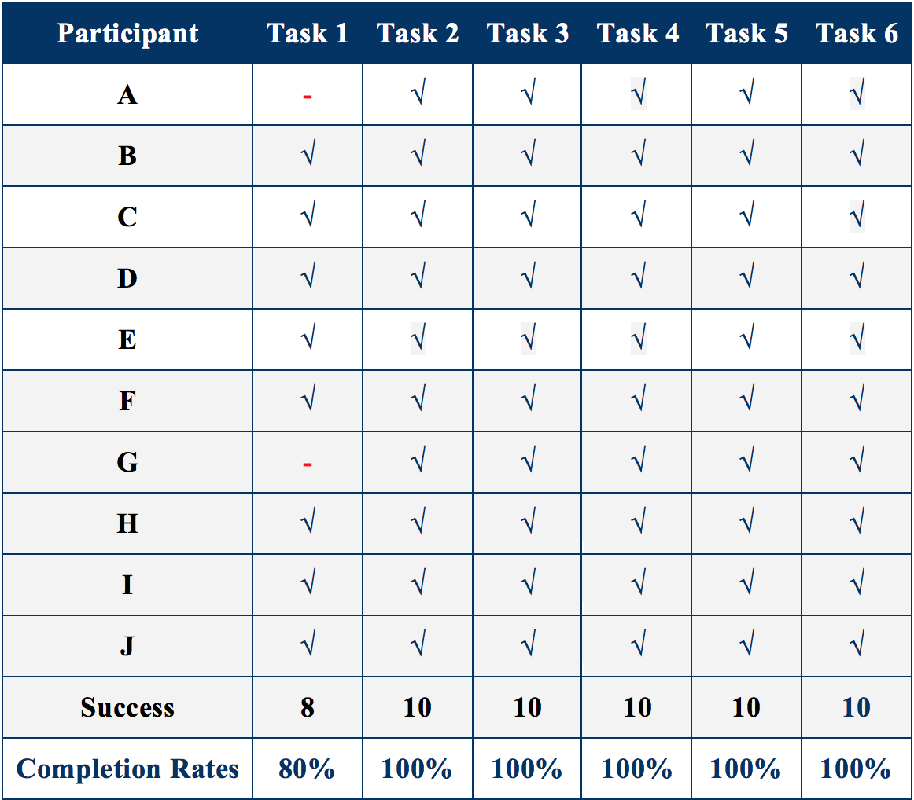
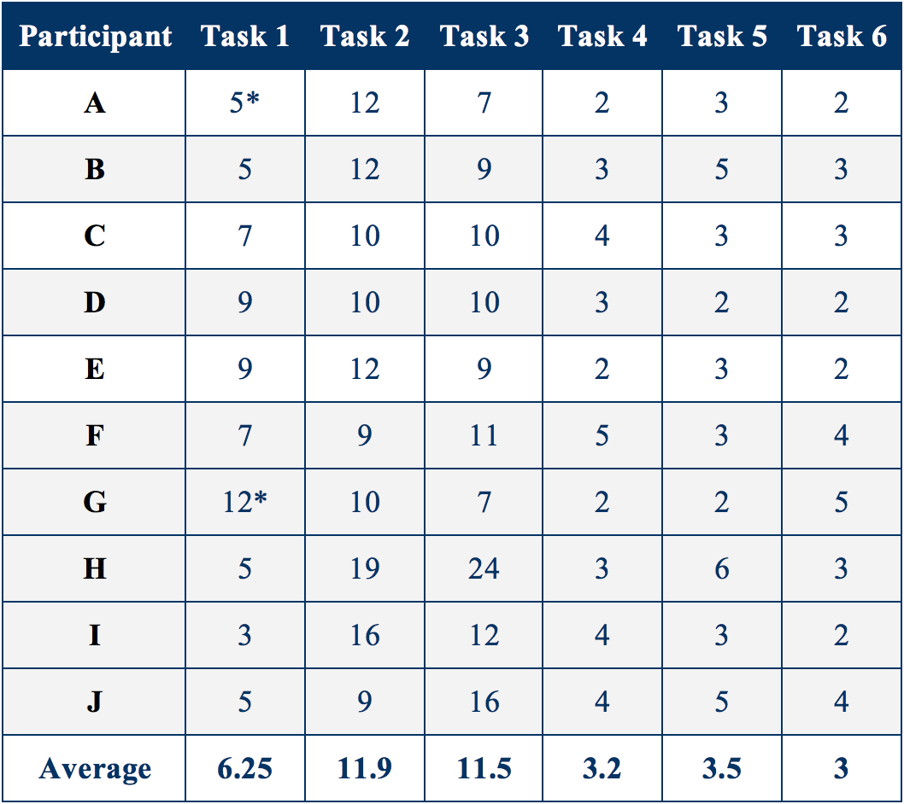
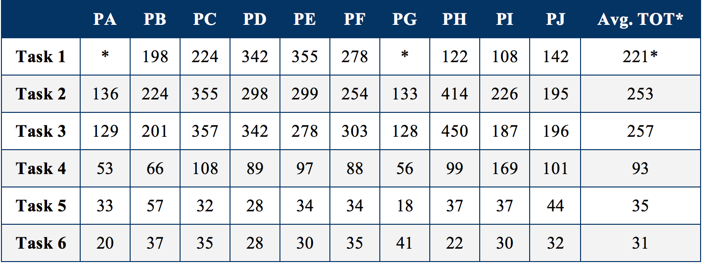
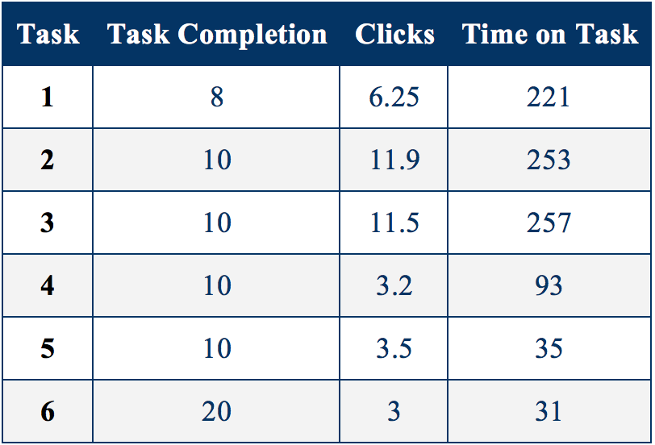
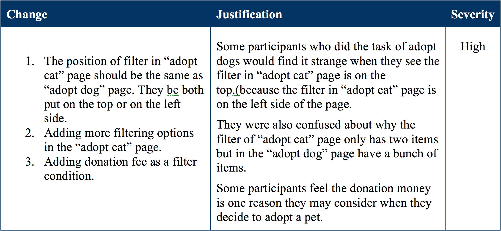
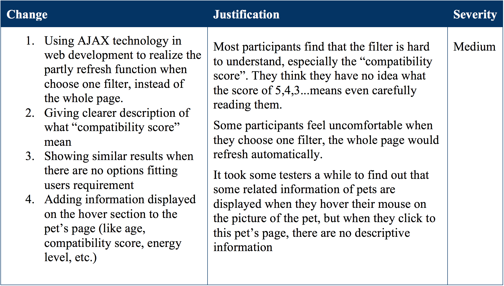
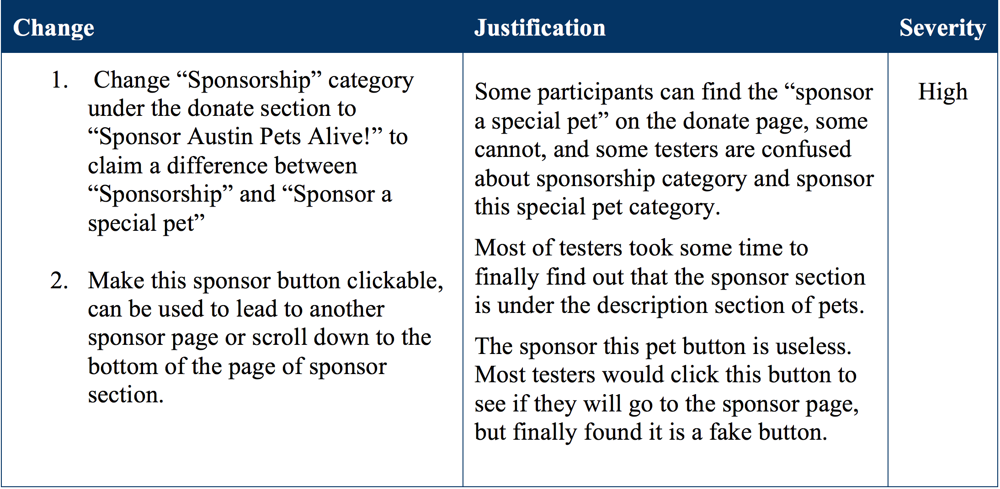
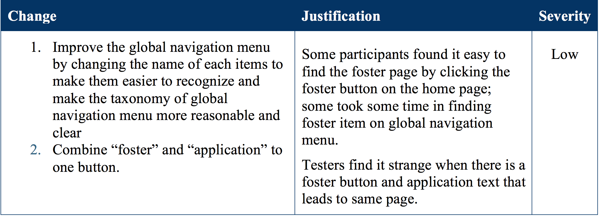
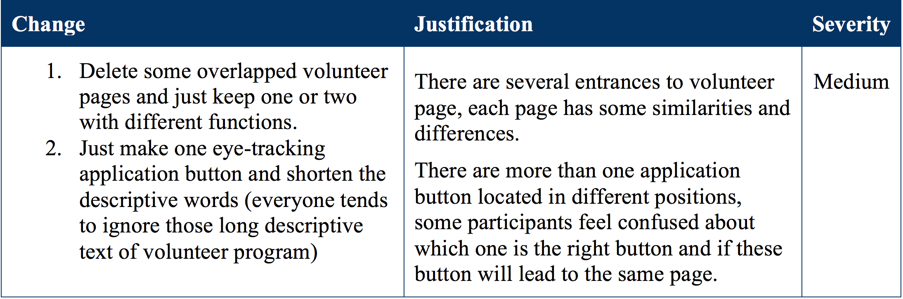
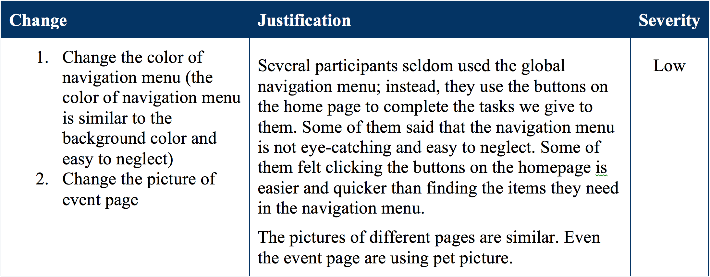

Spring 2015
Usability
Mengpin Dai
Hsin-jou Lin
Zhang Zhang
Moderator
Note taker
Test Observer
Data Analysis
Google Sheets
Screen Recorder
Interview, Survey
Heuristic Evaluation, Quantitative Research
Qualitative Research
• To identify usability problem within the user interface and content areas.
• To establish the baseline for user performance and user satisfaction levels.
• To know user satisfaction and give recommendation for future implementation.
We started from recruiting participants, defining tasks and scenarios, choosing a moderating technique, conducting Pilot testing, rotating Usability test sessions, collecting analyzing data, summarizing findings and writing the usability test report.
We recruited 10 participants in total for usability test, including:
People who have experience adopting pets
People who have experience being a volunteer
People who have experience visiting similar website
- Explained test procedure and main tasks
- Ask participants to rate interface/website
- Ask participants complete post-task questionnaire
- Completed pre-test questionnaire
- Complete a set of representative task scenarios and to provide feedback in thinking aloud
- Complete questionnaire afterwards
- Observing participant's reaction, behavior
- Taking notes for participant's thinking aloud content
- Record Time-On-Task and number of clicks
Task Completion Rate
Clicks per Task
Time on Task
Summary
Adopt a cat
Adopt a dog
Sponsor a dog
Foster a pet
Be Volunteer
Other
